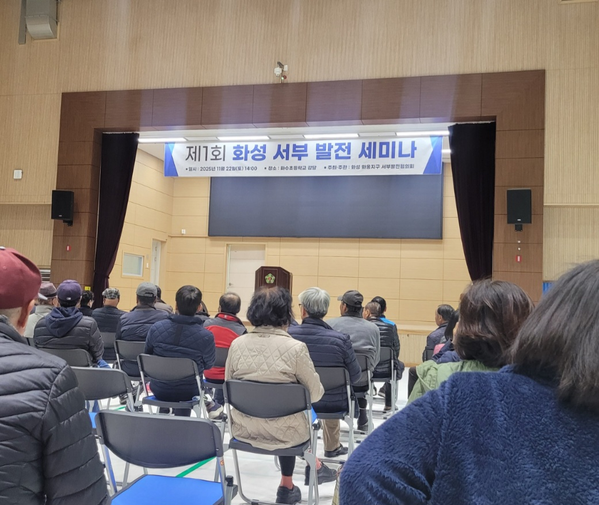

경기국제공항 화옹지구 입지 확정 및 조속한 추진을 통한
수도권 남부·서해안권 항공 접근성 개선과 국가경쟁력 강화를 위한 청원서

Abstract / 초록
우리는 경기남부 국제공항(가칭 경기국제공항)의 최적 입지로서 화성 화옹지구를 선정해야 하는 정책적·경제적·전략적 타당성을 종합적으로 제시한다. 수도권 남부와 서해안권은 반도체·자동차·바이오 등 국가 핵심 산업이 밀집한 대한민국 제조·수출 경제의 중심축임에도 불구하고, 항공 인프라 부족으로 글로벌 공급망 대응력과 국제 물류 경쟁력이 구조적으로 제약되고 있다.
화옹지구는 광범위한 국유 간척지를 기반으로 대규모 부지 확보가 용이하며, 서해안고속도로·수도권 제2순환고속도로·평택항·서해안 산업벨트와의 연계성이 뛰어나 항공·해상·도로가 통합된 복합물류 체계 구축에 최적화된 입지를 갖춘다. 특히 수원–용인–화성–평택을 연결하는 세계 최대 규모의 반도체 메가클러스터는 고부가가치 항공화물과 글로벌 비즈니스 이동 수요가 급증하고 있어, 경기국제공항은 해당 산업벨트의 공급망 안정성을 강화하는 국가 전략 물류 거점이 될 수 있다.
우리는 지리·산업·정책·경제성·환경 관점에서 화옹지구 국제공항 건설의 종합적 타당성을 분석하고, 제7차 공항개발 종합계획 반영, 사전·예비타당성 조사 조기 착수, 관계기관 공동 공론화위원회 구성 등 단계별 실행 로드맵을 제안한다. 경기국제공항은 지역개발을 넘어 대한민국 항공정책의 구조적 전환과 글로벌 물류 경쟁력 강화, 수도권 균형발전 실현을 위한 국가 핵심 전략 프로젝트임을 본 연구는 명확히 규명한다.
📋 목차
- 소개 — 경기국제공항 추진 배경 및 전략적 의미
- 사업 추진의 당위성 — 5가지 핵심 동기 분석
- 배경 및 현황 — 단일 공항 구조의 한계와 정책 기반
- 현황 진단 — 지리적 우위 및 산업 시너지 효과
- 화성지구의 경제 낙후 현황 — 동·서부 격차 실태 분석
- 화옹지구 국제공항 건설 필요성 — 6가지 전략적 이유
- 화옹지구 국제공항 도입 효과 — 경제·주민·사회적 편익
- 소음 영향 및 해결 전략 — 군공항 vs 민항기 차이 분석
- 종합 논의 및 쟁점 분석 — 기능 정체성·입지 타당성
- 결론 — 정책 제언 및 실행 로드맵
1. 소개
경기남부 국제공항(가칭 "경기국제공항") 건설 논의는 단순한 지역 개발 이슈를 넘어, 대한민국 항공 인프라의 구조적 취약성을 보완하고 수도권 남부·서해안권의 항공 접근성 불균형을 해소해야 한다는 국가적 과제에서 출발한다.
대한민국의 국제 항공망은 인천국제공항에 사실상 단일 집중되어 있으며, 이러한 구조는 국가적 리스크를 높이고 있다. 감염병, 재난, 기상 악화, 관제 장애 등 단일 허브 공항에 발생하는 문제가 국가 전체의 항공 기능 상실로 직결되는 취약성을 갖는다.
수도권 남부와 서해안 지역은 반도체 메가클러스터, 자동차·전자·화학 산업 단지, 평택항·당진항 물류 축 등 국가 전략산업이 밀집해 있으나, 항공 물류와 글로벌 이동에 필요한 공항 접근성은 매우 낮다. 경기국제공항은 이러한 산업 구조 변화에 대응할 수 있는 최적의 전략 인프라이다.
2. 사업 추진의 당위성
2.1 단일 공항 집중 구조와 다중 관문 체계 비교
| 구분 | 단일 공항 체계 (현 구조) | 다중 관문 체계 (경기국제공항 포함) |
|---|---|---|
| 재난 대응성 | 전국적 항공 운항 마비 가능성 | 기능 분산·회복력 향상 |
| 물류 안정성 | 혼잡·적체·지연 발생 | 공급망 안정성 제고 |
| 기상·관제 리스크 | 동시 전국 항공 타격 | 대체공항 확보·운항 유연성 |
| 국가 운영 리스크 | 단일 실패 지점 (SPOF) | 다중 허브로 회복탄력성 강화 |
2.2 경기남부 주요 산업지에서 국제공항까지 이동거리 비교
| 지역 | 인천공항 거리 (km) | 화옹지구 거리 (km) |
|---|---|---|
| 수원 (삼성전자) | 약 90 km | 약 45 km |
| 용인 (반도체 클러스터) | 약 100 km | 약 55 km |
| 화성 (반도체·자동차) | 약 95 km | 약 25 km |
| 평택 (항만·산업단지) | 약 110 km | 약 30 km |
3. 배경 및 현황
3.1 경기국제공항 후보지 비교 평가
| 평가 항목 | 화옹지구 | 서탄면 | 모가면 |
|---|---|---|---|
| 부지 확보 용이성 | 매우 우수 | 보통 | 낮음 |
| 산업·물류 연계성 | 우수 | 보통 | 보통 |
| 교통 접근성 | 우수 | 보통 | 보통 |
| 환경 영향 관리 가능성 | 보통 | 보통 | 우수 |
| 확장성 | 매우 우수 | 제한적 | 제한적 |
| 민원·보상 부담 | 매우 낮음 | 중간 | 높음 |
| 종합 경쟁력 | 🏆 1위 | 2위 | 3위 |

4. 화옹지구 국제공항 도입 경제적 효과
| 항목 | 예상 규모 | 비고 |
|---|---|---|
| 직접 고용 (공항 운영) | 8,000~12,000명 | 항공운송·관제·시설관리 |
| 간접 고용 (연계 산업) | 20,000~30,000명 | MRO·화물·서비스업 |
| 유발 고용 (지역경제) | 15,000~25,000명 | 소비·투자 증가 효과 |
| 지역 GDP 증가 | 연 1.2~2.0조 원 | 개항 이후 5년 기준 |
| 물동량 증가 효과 | 연 8~12% 상승 | 평택·당진항 연계 시 |
| 관광객 증가 | 연 150만~300만 명 | 서해안 관광벨트 연계 |
국제공항 개항 전후 자산가치 변화 사례
| 지역 | 개항 연도 | 가치 상승률 | 특징 |
|---|---|---|---|
| 영종도 (인천) | 2001 | 45~90% | 국제도시·물류·관광 복합도시 성장 |
| 김해 강서구 | 2000년대 | 35~70% | 산업단지·주거지 개발 활성화 |
| 후쿠오카 | 1990년대 | 25~55% | 도심형 국제공항 시너지 |
| 하네다 (확장) | 2010 | 30~50% | 관광·비즈니스 수요 급증 |
5. 소음 영향 및 해결 전략
군용기 소음과 민항기 소음의 구조적 차이
| 구분 | 군용기 (전투기) | 민항기 (여객·화물) |
|---|---|---|
| 엔진 특성 | 초음속 추력·고출력 터보제트 | 저소음 터보팬·소음저감 설계 |
| 비행 패턴 | 급상승·급하강·저고도 기동 | 일정한 상승·하강, 안정적 패턴 |
| 소음 수준 | 120~150 dB (매향리 사례) | 70~90 dB (국제공항 표준) |
| 운영 빈도 | 수시출격·훈련 반복 | 정해진 스케줄 기반 운항 |
| 민가 영향 | 광범위, 고주파·충격음 | 활주로 방향 설계로 최소화 |

결론 및 정책 제언
경기남부 국제공항의 화옹지구 건설은 단순한 지역 개발이 아니라, 대한민국 미래 항공·물류·산업 경쟁력을 좌우하는 국가 전략사업이다.
✅ 인천국제공항 단일 구조 위험 완화 — 다핵형 관문체계 구축 필수
✅ 반도체 메가클러스터 항공물류 최적 거점 — 화성·용인·평택 산업축 직결
✅ 국유 간척지 기반 압도적 부지 경쟁력 — 저비용·고확장성
✅ 환경 보전과 개발의 공존 — 첨단 친환경 공항 모델 가능
✅ 수도권 남부 1,000만 항공 접근성 개선 — 공공성·균형발전 실현
이에 본 백서는 중앙정부와 경기도가 조속히 예비타당성조사와 기본계획 수립을 추진하여, 경기국제공항 건설을 국가 전략으로 확정할 것을 요청한다.